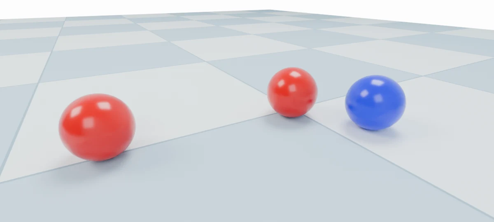
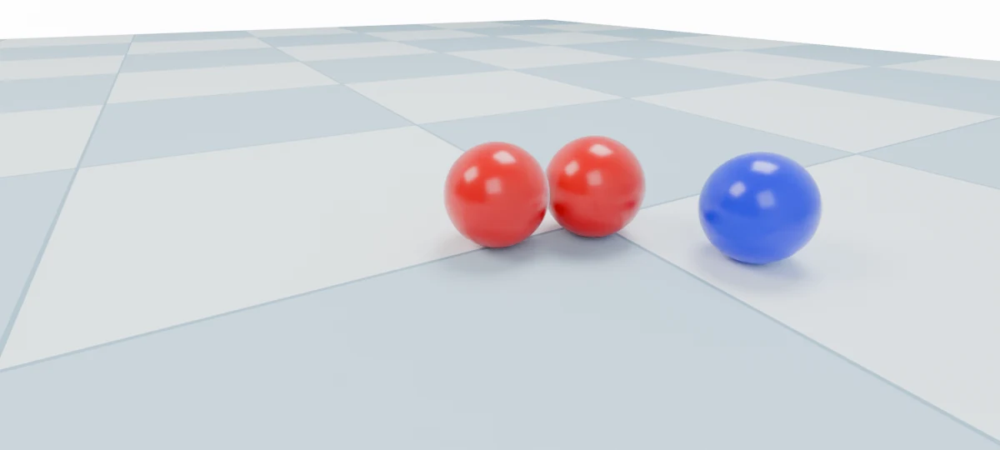
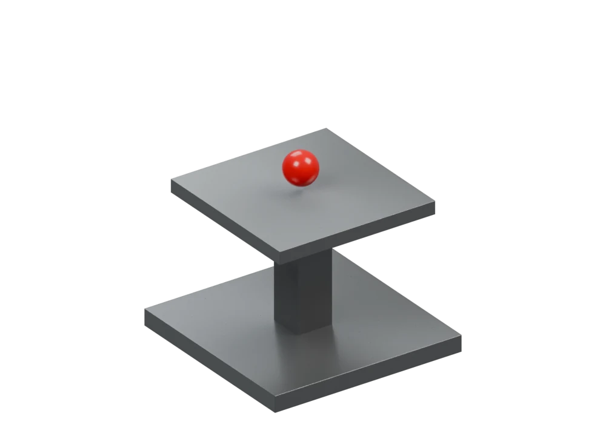
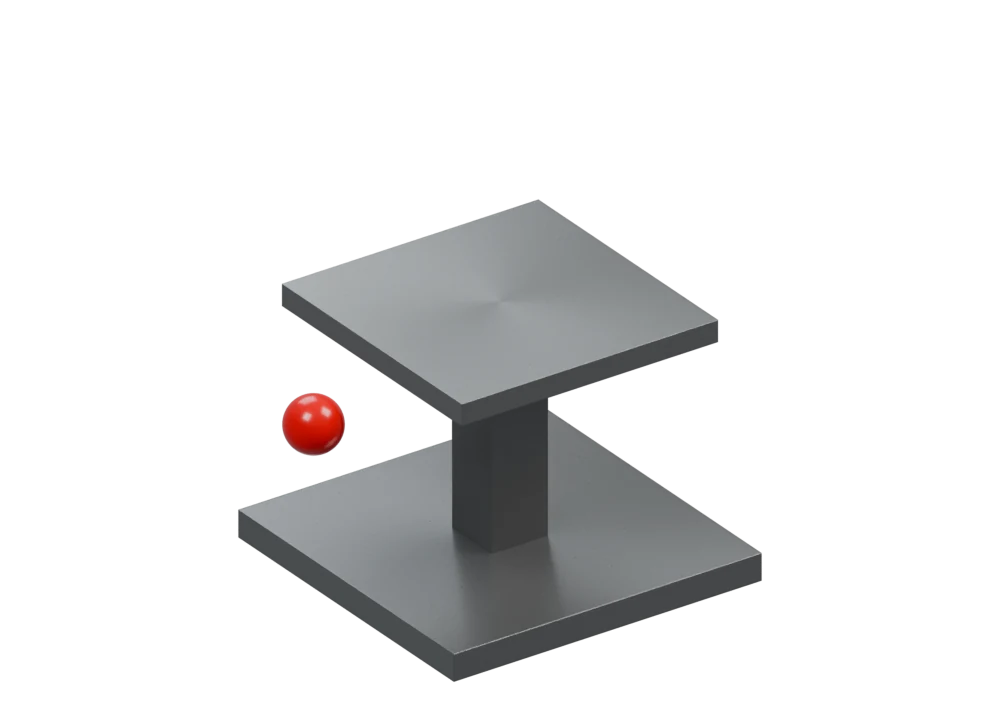
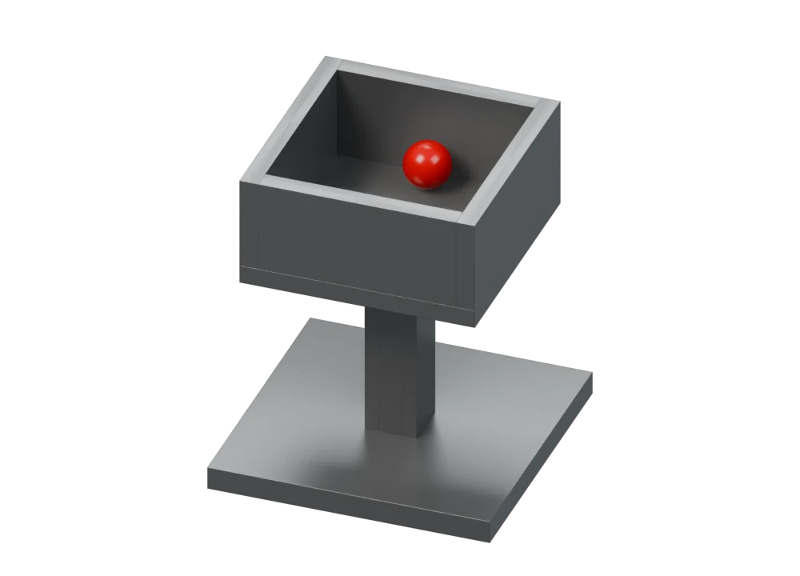

A
Try the mechanism
Interactive illustrationA simplified illustration of the law. The recorded experiment is shown alongside.
Can LLMs Uncover Hidden Physical Laws
through Free Exploration?
LLMs explore 15 worlds with no hints
about what to discover.
Release two identical balls from the same height.

Table 1, brought to life.
Select a scene to watch.
This video could not load. The interactive illustration is available in Try the law.
 INITIAL STATE · RECORDED WORLD
INITIAL STATE · RECORDED WORLDSimplified law illustration. See Original scene for the recorded starting environment.
A strange bounce. A curved path. A response that arrives late. Try each mechanism, then see how GPT-6-Astra tested it in a successful exploration.
A simplified illustration of the law. The recorded experiment is shown alongside.
Original final note, preserved verbatim. The full report and notes are available below.
These are selected successful explorations. Across the full main evaluation, Astra succeeds in 7 of 42 altered-scene runs; all model results are reported below.
A complete experimental setting: one agent creates the world, another explores it, and independent evaluation checks the claim against the law and the evidence.
A designer changes physical laws in an executable simulation. The explorer is not told what changed.
The explorer observes, intervenes and constructs tools. Apparatus designs undergo automated review.
A discovery needs both a correct law and supporting experiments in the exploration record.
Unanswered questions and corrected errors inform generation, refinement and composition.
The scene designer specifies objects and altered laws. These laws are hidden from the explorer.
Scientific discovery often begins with an unexpected observation that prompts a new research question. In a world with altered physical laws, can large language models (LLMs) notice unexpected behavior, such as heavier objects falling more slowly, and discover the law through experiments without being told what to investigate? To evaluate this ability, we introduce LongChang, an automated framework that creates simulated worlds with altered physics, where one or more laws differ from ordinary physics. The evaluated LLMs act as explorers, manipulating objects and building tools to investigate their own questions without research tasks or hints about these laws. Separate LLM agents generate and review scenes, review tool designs, and evaluate reports for correctness and experimental support using the altered physical laws and exploration records. These records guide scene evolution for further exploration, allowing the full cycle to run without human intervention. Among 12 LLMs, GPT-6-Astra achieves a discovery rate of 16.7%, while the other 11 score 0%. The exploration records reveal uninvestigated anomalies and only partial identification of the altered physical laws.
Only one of the twelve models makes discoveries under free exploration. Correct explanations and well-supported observations do not always arrive together.
The other 11 models record no discoveries.
Supported findings often leave a law's conditions or scope unresolved.
Rates across 14 altered scenes × 3 runs. All axes span 0–100%.
Each cell represents three explorations of the same scene.
In the normal control, 36.1% of reports are rejected for false claims of altered physics or unsupported explanations.
D: discovery; C: correctness; S: support; R: rejected control reports; L: mean turns; ES: early stopping; CS: runs with a successful build; CF: failed build attempts; AF: failed actions. D/C/S exclude the normal control. Exploration statistics use all 45 runs per model.
The budget comparison uses matched runs without context compaction. Its 100-turn baseline is distinct from the main evaluation. Guidance and apparatus comparisons use the main baseline.
Three questions from the paper: does the explorer pursue an anomaly, distinguish competing explanations, and build the instrument it needs?
Both explorers encounter red’s delayed restart. Astra follows the unexpected motion; Gemini continues its planned sequence. This is the research-question case study from the paper.
Selected Scene 15 runs from the paper · Astra repeat 2 and Gemini repeat 1 · same initial state and free-exploration prompt · 100-turn budget. Video playback is retimed; the underlying states are recorded. Notes and observations are included in the case-study download.
Two red–blue collisions change and then restore the colors. Both explanations fit. A red–red collision makes different predictions.


GPT-6-Astra · 500-turn budget · selected exploration, Turns 39–49. This comparison supports color exchange; it is not a claim that the full run satisfies every discovery criterion.
Astra builds a spring-supported weighing pan. Red drifts away after release, so the explorer adds retaining walls and increases the available travel.

A guided spring and plunger provide a load reading.

Red drifts off; the reading returns to the unloaded level.

Retaining walls keep the ball in place for a stable reading.
Recorded slide-joint travel, in bricks.
GPT-6-Astra · 500-turn budget · selected exploration, Turns 18–34. Readings are shown at the resolution available to the explorer.
When later evidence corrects an explanation, the same error can guide three kinds of new discovery challenge.
Initial inference“The northward effect is not persistent.”
→After the delayed restartThe force was temporarily paused, not absent.
Replace the fixed northward force with red–blue repulsion. The force now depends on relative position.
Block red's force while blue is inside the gray square. Waiting alone may no longer restore motion.
Combine the paused force with Scene 14's delayed velocity copy. Separate triggers produce separate delays.
Evidence support stays at 100%, while no report identifies the complete laws of the evolved scenes.
This scene-evolution evaluation uses separate source-scene runs from the main comparison above. All five conditions use three runs.
The paper, implementation and materials behind the experiments.
Method, experiments and analysis
Anonymous PDFSimulation and discovery framework
Anonymous source bundle · ZIP540 explorations, with individual labels
CSV · current paper evaluationExploration, reporting and evaluation
Original prompt text